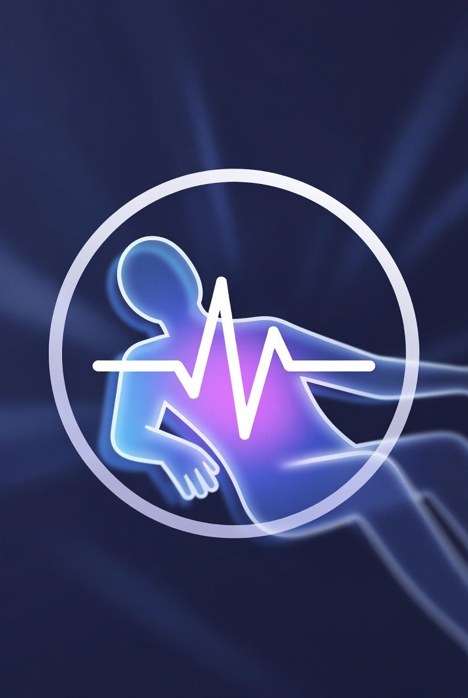

Sign in once on this device to sync and protect your logs.

A Structured Approach to Redox Stabilization, Axonal Preservation,
and Exploratory Myelin Support
Purpose. This protocol is a structured framework for improving functional stability in adrenomyeloneuropathy by reducing biological stress on vulnerable neural pathways.
What it is not. It does not claim a cure, reversal of established damage, or forced regeneration. The working target is margin: preserving what remains and reducing secondary injury.
Why this is different. Many treatments reduce symptoms downstream without changing the underlying strain. This approach focuses on upstream environment optimization: oxidative load, metabolic reliability, and inflammatory pressure. The aim is to reduce background instability rather than temporarily suppress expression.
How we know whether it helps. The model relies on repeated, standardized checks compared against baseline. Functional test outputs are tracked alongside symptom domains such as pain, stiffness, fatigue, and sleep disruption. Changes are interpreted over weeks, not days, and are considered meaningful only when directionally consistent across more than one measure. Contextual variables such as stress, illness, GI upset, and medication adjustments are logged to reduce false attribution.
This project was not assembled casually. It represents a structured, multi-layered effort conducted over an extended period of time to address a condition where large-scale translational research remains limited and long-term human trials are scarce.
This protocol is structured around a dual-mechanism model targeting two core drivers of pathology: redox instability and lipid dysregulation. The redox axis is supported through coordinated use of alpha-lipoic acid, N-acetylcysteine, and vitamin E to stabilize oxidative stress and preserve axonal integrity. In parallel, nervonic acid is incorporated as a lipid-modulating component to support membrane composition and potentially influence very long chain fatty acid dynamics. Together, these components define the mechanistic foundation of the protocol.
The following methodological steps were undertaken to construct this framework responsibly:
Within this framework, the term "dual mechanism" reflects the recognition that oxidative destabilization and lipid compositional imbalance represent distinct but interacting pathological processes. Redox stabilization and lipid substrate modulation are therefore approached as parallel axes rather than sequential steps, acknowledging that meaningful system-level stability requires addressing both domains simultaneously.
The Pilot is the primary subject (myself), who implements the full protocol first and confirms tolerability and safety metrics over time. The Passenger is my daughter, for whom any future use would be prophylactic and contingent on demonstrated safety in the Pilot phase. No crossover occurs without stability confirmation.
This system exists to apply structured, translation-focused reasoning in an area where large-scale human research remains limited.
It is structured, controlled, and documented.
A Structured Approach to Redox Stabilization, Axonal Preservation,
and Exploratory Myelin Support